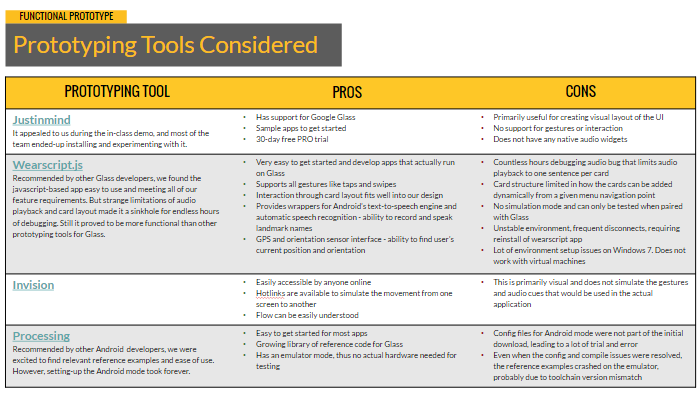

WayFinder — Google Glass as a Navigation Aid
Making navigation accessible.
- User Research Low Fidelity Prototyping Google Glass App Development User Testing
Problem Statement
Navigation applications in the market predominantly focus on smartphones which leverage GPS and audio interfaces to speak out turn-by-turn walking directions for the user. These applications merely give sequential directions without providing the user context of the surrounding environment. From interviewing and observing blind users, we discovered a need for location awareness. They need to be aware of locations that are familiar to them when navigating.
Research Phase
After interviewing representative users and observing them carrying out specific tasks, we (team of 4) came up with these personas for WayFinder users.
Insights
We found out a lot of interesting areas where we could help. From navigation to helping users orient to their surroundings, from aiding exploration to creating special routes for our target users. What struck us was a need for location awareness: beyond cues affirming that users are on the right path, they needed to be aware of locations that are familiar to them when navigating around new environments.
Think Aloud and Key Observation
Through think aloud exercises, we found out that it was hard for users to remember the multiple gestures required to manipulate. So, we decided to simplify our application. The key observation is shown above. This showed us just how large our initial problem statement was. At this point our team decided to focus on the problem of providing context when our target users navigated and figuring out how wearable technology could play a role in this process.
Low Fidelity Prototyping
We tried 4 different methods of prototyping to test out our ideas and get rapid feedback from users.
The User Flow We Developed
Google Glass has bone conducting audio which is better than earphones or headphones as it does not interfere with contextual noise (like traffic). The initial process flow (low res) that we came up with: 
Prototyping
The main question now was: How do you prototype and test a design with blind users? 
However, after analyzing and experimenting with the above prototyping tools, we realized that the best tool for us would be WearScript because it supported gestures, audio and gps. We used that to develop a functional prototype. The flow seen here is made up of representative screenshots. I created a version of it on Invision for instructor feedback.
Learning
To understand users and discover their fundamental intents, desires, and drivers you need to go out and talk with people. Consequently, no design survives contact with users.
Future work in this area can focus on enhancing gestures, improving hardware, fortifying the landmark database, and using machine learning or computer vision to organize the landscape better.
Notes on Designing for Glass
1. Don’t get in the way (Complement the actual experience; Users expect it to get out their way once they are done using it.)
2. Provide relevant information (in the moment)
3. Avoid the unexpected (Don’t surprise the User; avoid jarring experiences)